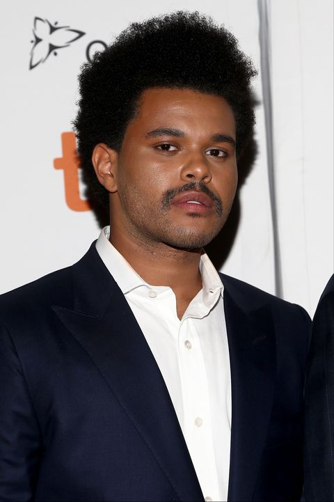
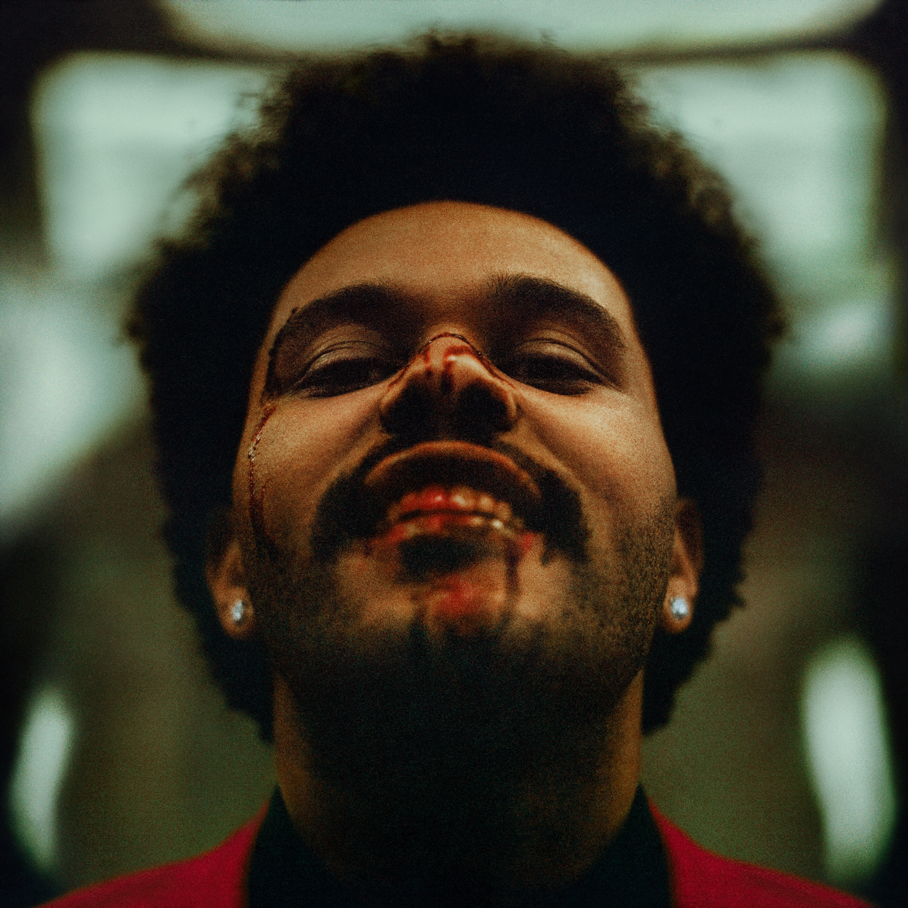
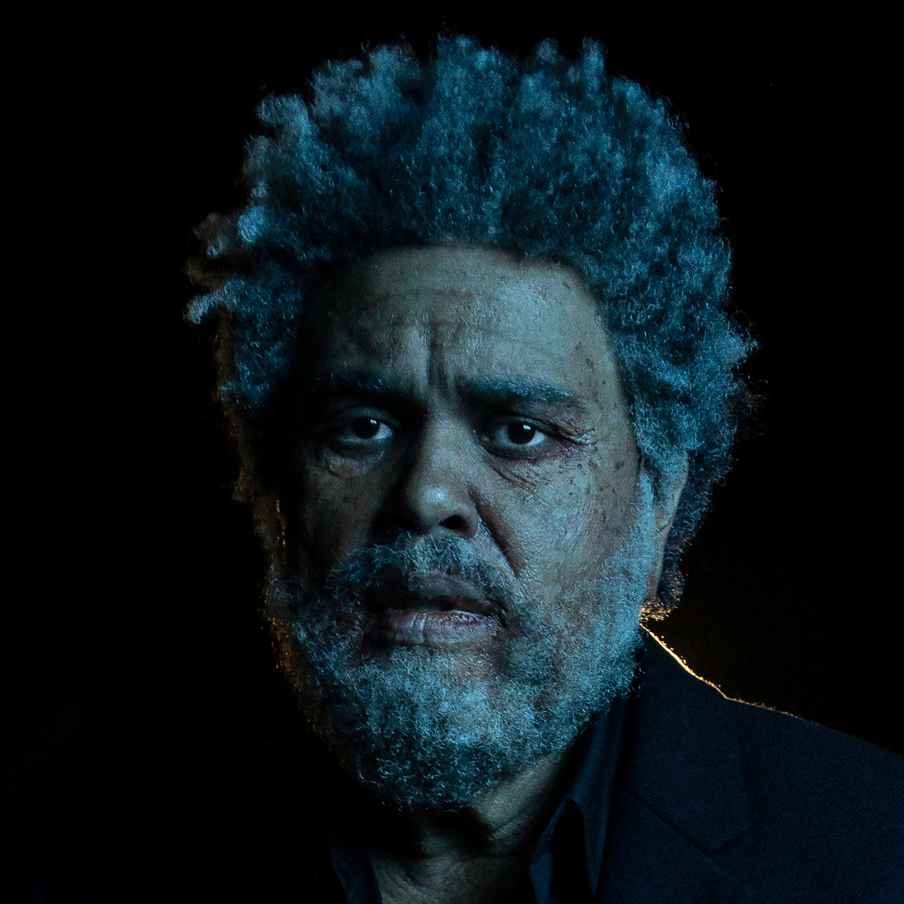
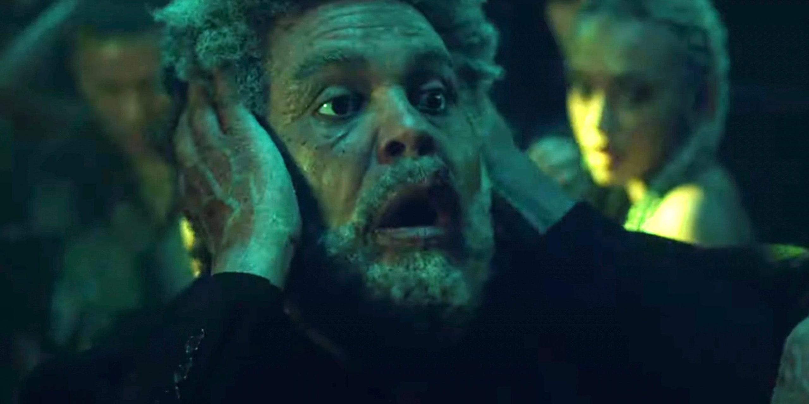
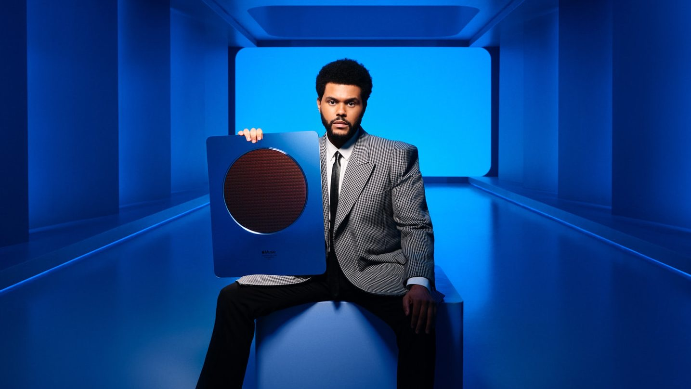
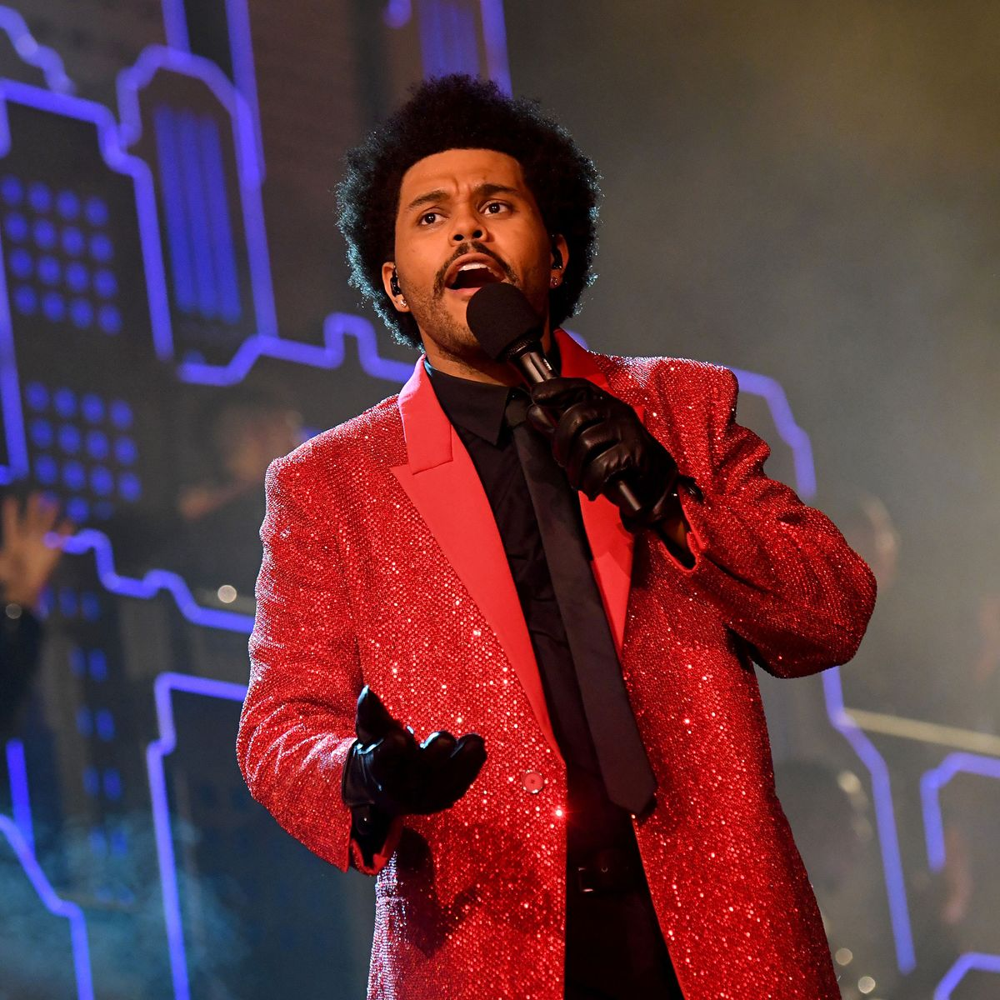
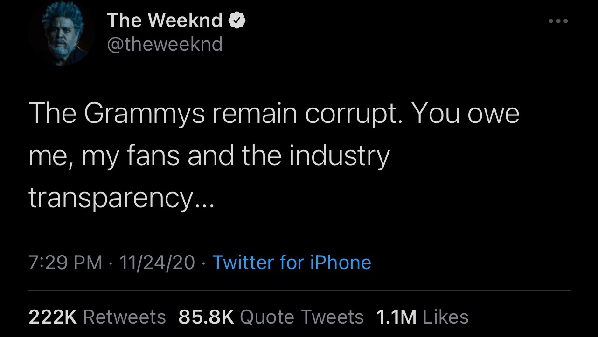

The Weeknd’s massive success was never clearer than it was after the release of Starboy. Even My Dear Melancholy, one of his worst performing works in terms of critical reception, garnered 26 million streams on its release day. In 2019, The Hills became The Weeknd’s first diamond-certified record.
   The visuals flairs included in the era of After Hours and Dawn FM, in the cover art and music videos, continued to reflect his chameleonic musical tendencies, trending toward new wave- and synth pop-esque sounds.
  The Weeknd’s most recent developments in the industry reflect his status as a powerhouse, seemingly completely unswayed by the shifting tides of the media landscape. He was named Apple Music’s Global Artist of the Year and performed in the Super Bowl in 2021, but this was preceded by coming into conflict with the mainstream media when he received no nominations at the Grammy Awards that year. Even as the organization claimed no relation to his Super Bowl performance in the decision-making process for nominations, The Weeknd doubled down and claimed corruption from the ceremony, refusing to submit his music in further shows.